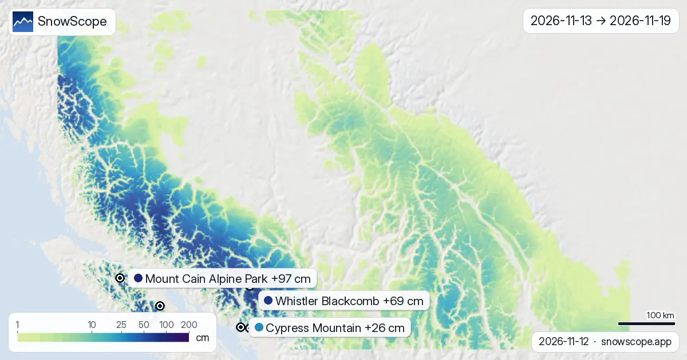
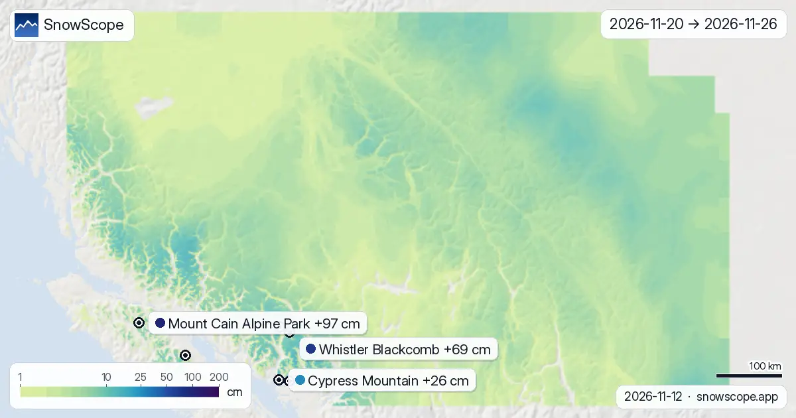

Tendencia de nieve Oeste de Canadá hasta el 26 de noviembre: 97 cm en Mount Cain Alpine Park, 69 cm en Whistler Blackcomb
Catorce días de nieve nueva en un mapa, del 13 de noviembre al 26 de noviembre, para cada montaña en el oeste de Canadá: es lo que esperan los dos modelos globales que llegan a dos semanas, ECMWF y GFS, tomados en su punto medio, con la diferencia entre ellos en cada cifra citada. Lo máximo va a Mount Cain Alpine Park: unos 97 cm en la parte alta, 64 cm–131 cm según el modelo, luego Whistler Blackcomb con 69 cm. Confianza: buena para la tendencia, menor para cada cifra suelta.
Consulta la previsión de nieve en tiempo real de Mount Cain Alpine Park en la app SnowScopeEspesor de nieve, alertas de nieve polvo y mapa 3D, gratis.
Estación por estación, los próximos 14 días
Mount Cain Alpine Park (Canadá): unos 97 cm en 14 días (64 cm–131 cm según el modelo), 88 cm la primera semana y 9 cm la segunda. Apunta el 15 de noviembre: es el día más grande, con 47 cm, de 4 días con 5 cm o más.
Whistler Blackcomb (Canadá): unos 69 cm en 14 días (53 cm–84 cm según el modelo), 60 cm la primera semana y 9 cm la segunda. Apunta el 15 de noviembre: es el día más grande, con 33 cm, de 4 días con 5 cm o más.
En Mount Washington Alpine Resort (Canadá) las dos semanas suman unos 56 cm (35 cm–78 cm según el modelo): 46 cm al final de la primera semana, luego 10 cm más. Apunta el 15 de noviembre: es el día más grande, con 37 cm, de 2 días con 5 cm o más.
Ski Callaghan (Canadá): unos 43 cm en 14 días (29 cm–57 cm según el modelo), 35 cm la primera semana y 8 cm la segunda. El día con más nieve es el 15 de noviembre con 19 cm; 2 días traen 5 cm o más.
Cypress Mountain (Canadá): unos 26 cm en 14 días (6 cm–45 cm según el modelo), 15 cm la primera semana y 10 cm la segunda. Apunta el 16 de noviembre: es el día más grande, con 13 cm, de 2 días con 5 cm o más.
Mt Seymour (Canadá): unos 24 cm en 14 días (2 cm–46 cm según el modelo), 16 cm la primera semana y 8 cm la segunda. Apunta el 16 de noviembre: es el día más grande, con 14 cm.
| Estación | Espesor de nieve | Nieve nueva, 72 h | Previsto, próximos días | Cota máx. |
|---|---|---|---|---|
| Mount Cain Alpine Park | 58 cm | 15 cm | 37 cm | 1616 m |
| Whistler Blackcomb | 67 cm | 38 cm | 78 cm | 2259 m |
| Mount Washington Alpine Resort | 0 cm | 4 cm | 6 cm | 1569 m |
| Ski Callaghan | 16 cm | 3 cm | 1 cm | 998 m |
| Cypress Mountain | 0 cm | 0 cm | 0 cm | 1426 m |
| Mt Seymour | 0 cm | 0 cm | 0 cm | 1255 m |

Primera semana frente a segunda
En toda la región, el 55 % de la nieve de la quincena cae la primera semana (del 13 de noviembre al 19 de noviembre), el resto la segunda (del 20 de noviembre al 26 de noviembre).
Los madrugadores: Mount Cain Alpine Park, Whistler Blackcomb, Mount Washington Alpine Resort, Ski Callaghan, Cypress Mountain y Mt Seymour ven la mayor parte de su nieve antes de acabar la primera semana.
En el mapa, unos 48.724 km² de terreno de montaña reciben 20 cm o más en las dos semanas, y 17.413 km² reciben 50 cm o más.

Nieve nueva por altura
Lo que la altitud hace con estos totales, leído sobre toda la cordillera y no en los remontes: entre 1000 m y 1500 m: típicamente 6 cm, el cuarto más nevado de esa franja 8 cm o más; entre 1500 m y 2000 m: típicamente 9 cm, el cuarto más nevado de esa franja 14 cm o más; entre 2000 m y 2500 m: típicamente 9 cm, el cuarto más nevado de esa franja 14 cm o más; entre 2500 m y 3000 m: típicamente 9 cm, el cuarto más nevado de esa franja 12 cm o más; entre 3000 m y 4500 m: típicamente 10 cm, el cuarto más nevado de esa franja 11 cm o más.
Los días a vigilar
Los días para marcar, contados sobre las 55 estaciones que seguimos en el oeste de Canadá: lunes 16 de noviembre (16 de 55 estaciones con 5 cm o más, hasta 14 cm en Mt Seymour).
Cómo leer los mapas
Guía de lectura: el primer mapa es la quincena en una imagen, los otros dos la toman semana a semana. Donde el relieve sigue gris se espera menos de un centímetro; cuanto más oscuro el color, más nieve. Los pines muestran las estaciones de este parte a la altura de las pistas.
Toma con cautela el extremo lejano de estos mapas. Dos modelos de acuerdo dan una horquilla estrecha y un plan sólido; dos modelos alejados significan que la segunda semana sigue abierta. Actualizamos cada mañana y la imagen se afina día a día.
Consejos para esquiadores
- Si tu estación queda entre dos colores en el mapa, lee su pin: está calculado sobre sus pistas, no sobre el pueblo.
- La isoterma de 0 °C es una previsión y puede moverse varios cientos de metros, lo que cambia dónde la lluvia pasa a nieve: vuelve a mirar el mapa el día antes.
- Antes de cualquier salida fuera de pista o de travesía, lee el boletín oficial de aludes (enlaces abajo).
- Nieve en el mapa no significa que la estación esté abierta: consulta remontes y fechas en su web.
Sobre estas cifras
Los espesores de nieve de las estaciones son la nieve más profunda en las pistas altas según el modelo de nieve de SnowScope (unos 1 km, cálculo del 12 de noviembre); son estimaciones para una zona, no una medida en un punto. Los valores de las estaciones de medida son medidas en la fecha indicada. Las previsiones pueden cambiar. Consulta siempre el boletín oficial de aludes antes de salir fuera de pista.
Boletines oficiales de aludes: Avalanche Canada
Citar este informe
Para investigación, docencia o prensa: cifras y gráficos reutilizables libremente bajo CC BY 4.0 con esta cita.
SnowScope (2026), Tendencia de nieve Oeste de Canadá hasta el 26 de noviembre: 97 cm en Mount Cain Alpine Park, 69 cm en Whistler Blackcomb, https://snowscope.app/blog/es/2026/11/western-canada-2-week-snow-forecast-maps-12-november-2026.html, consultado el 2026-11-12
SnowScope (Atlas Labs). (2026, November 12). Tendencia de nieve Oeste de Canadá hasta el 26 de noviembre: 97 cm en Mount Cain Alpine Park, 69 cm en Whistler Blackcomb. SnowScope snow reports. https://snowscope.app/blog/es/2026/11/western-canada-2-week-snow-forecast-maps-12-november-2026.html
BibTeX
@misc{snowscope2026westerncanada2weeksnowfo,
author = {{SnowScope (Atlas Labs)}},
title = {Tendencia de nieve Oeste de Canadá hasta el 26 de noviembre: 97 cm en Mount Cain Alpine Park, 69 cm en Whistler Blackcomb},
year = {2026},
month = nov,
howpublished = {\url{https://snowscope.app/blog/es/2026/11/western-canada-2-week-snow-forecast-maps-12-november-2026.html}},
note = {Published 2026-11-12 18:27 UTC; accessed 2026-11-12}
}· CC BY 4.0 · Métodos, datos y herramientas →
Sigue Mount Cain Alpine Park
Gratis: un aviso cuando llega la nieve y la previsión cada mañana.
Más partes de nieve

Si buscas la mayor cantidad de nieve en el oeste de Canadá hoy, mira Mount Washington Alpine Resort (Canadá): unos 145 cm arriba. Después vienen …

Mount Cain Alpine Park, nieve nueva frente a la región: 15 cm en 72 horas (12 de noviembre). La superficie nevada pasó de 281.250 km² el 10 de …

Hasta el 10 de noviembre, nuestra previsión da 103 cm en Whistler Blackcomb, 99 cm en Ski Callaghan y 74 cm en Mount Cain Alpine Park. Las cifras de …